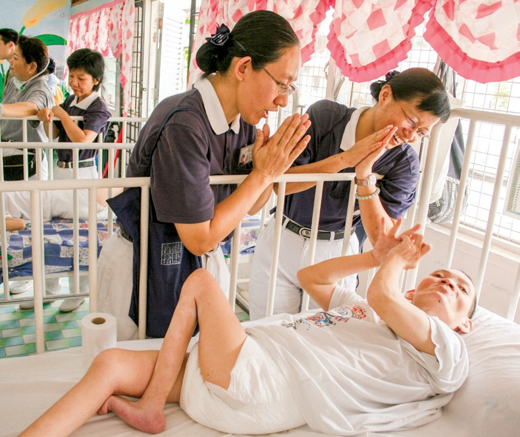
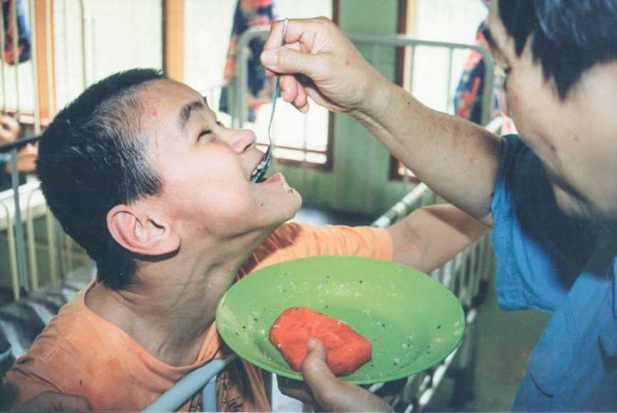
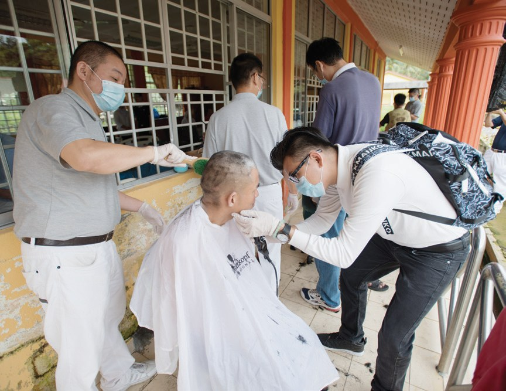
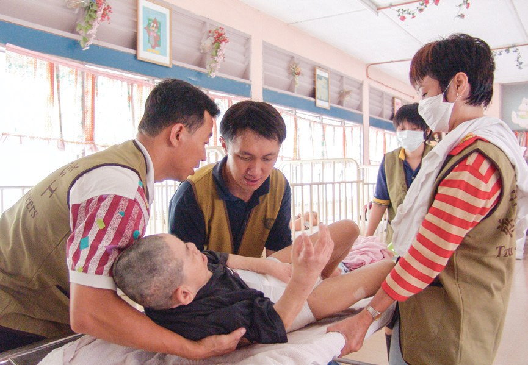
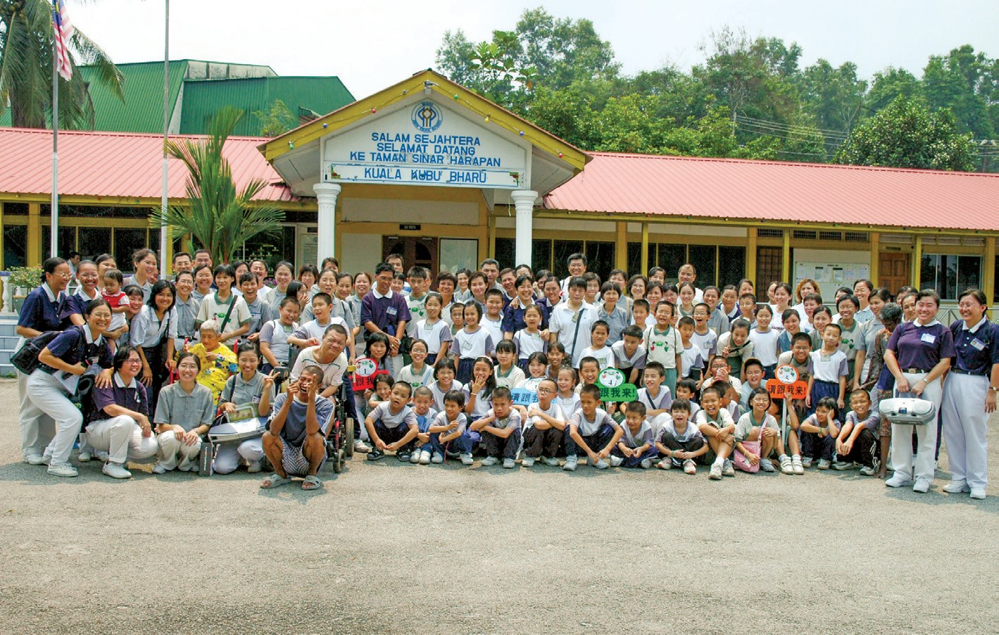
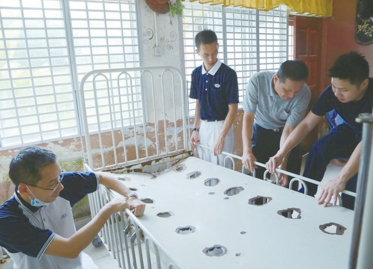
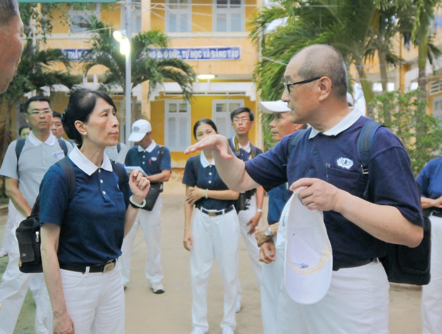

勤耕福田
生命教育
一個讓人害怕、想轉身離開的地方，為什麼有人願意一去二十多年？

先別急著下結論，讀完再說說你的想法～
這一篇寫新古毛殘智障院。志工第一次走進去時被眼前景象震住了；後來，他們先學會照護，再一個月一個月地去。
最後還有一位志工的故事：她原本決定「只去一次」。
下面是原書的節錄，紅色底線是我們替你標出的轉折點。
讀之前：走進一個讓人害怕的地方，你覺得最需要什麼？（可多選）
第一次走進去
先認識這座院，再跟著五位志工推開門。閱讀引導
- 1983政府福利部設立殘智障院p.69
- 1995志工第一次前往關懷p.69
- 199510月設立專案，每月一次p.70
- 1996增加到每月兩次p.71
- 1998院方批准慈濟攝影p.71
- 2011志工人數再增至約百位p.74
- 2016捐出 64 組床褥p.76
- 2020疫情暫停，年底再捐 100 組p.75–76
位於雪蘭莪州烏魯雪蘭莪縣的新古毛殘智障院，是政府福利部於1983年所設立……專門收容來自全馬各地兩百多名患有腦性麻痺、癲癇、自閉症、精神疾病的病友。
大部分的病友都是因原生家庭及親友無力負擔生活照護，而被送到此處。

很多是因為家裡照顧不了……
吉隆坡慈濟志工溫秀珠與丈夫林清淵得知位在雪蘭莪縣的新古毛殘智障院極需幫助，1995年6月25日邀約志工詹月美、楊寶美及曾鈿發一同前往關懷。
一走進院內，眾人即被眼前的畫面所震懾……
「當時院內景象有如人間煉獄。每一位院友被關在不同的房間，有的院友因身體殘缺而臥床，有的則因精神異常而被綁在床架上……」
志工 詹月美回憶第一次走進院內・p.69

會不會就想轉身離開？
看著院友們因為病苦沒辦法移動，待在如此髒亂的環境中，醫療資源、照護人力都缺乏，吉隆坡慈濟人決議啟動關懷……
為了能確實地幫助病友，溫秀珠跟其他志工多次前往殘智障院等照護機構，向護理人員學習如何照護病友，如何為病患洗浴、安全移動病患、餵食等。

一個月一個月地去
從每月一次，到每月兩次；從不准拍照，到院方點頭。閱讀引導
1995年10月22日，為舒緩殘智障院人手嚴重不足的困境，慈濟正式設立專案，每個月前往一次，與護理人員分工合作，為院友理髮、洗澡、剪指甲、換洗髒衣尿布、餵食、清理環境及關懷慰問等。

志工雖已受過訓練，不過由於院友精神狀況不穩，身上的頭蝨、異味，叢生的亂髮在在都考驗著志工們的耐心與毅力。
而在一念悲心，以及藉事練心的修行心態下，志工們終於放下身段，並克服心理障礙，用單純的心念為院友們付出及服務。

還是一次一次地去，好不容易。
……1996年7月，志工將服務次數增加至每月兩次。
殘智障院自設立以來，為避免有心人士及不法之徒以院友的照片募款行騙，所以嚴禁訪客在院內拍攝、錄影。
1998年起，出於對慈濟的肯定與信任，院方批准慈濟的攝影申請，藉此記錄志工在院內服務的身影。
原文・p.71同時，院方從原先只開放三間病房，到後來開放六間，讓志工能服務更多的病友。


三間病房，到六間——
院方的信任，是怎麼來的？
自1995年11月專案開始後，每月前往殘智障院服務的志工人數持續增長，每次人數都維持在六十位以上。
……雖然次數減少，但2002年至2009年間，前往殘智障院付出的服務人次每月仍達兩百人以上……包括實業家、教聯會、兒童班、親子班、慈少、慈青等慈濟志工。
院友在涼亭等著
志工改變了院區，院友也慢慢改變了。閱讀引導
2005年12月25日聖誕節，八十位志工及三十位慈青前往關懷……其中坐在輪椅上的口足畫家阿南，雖因罹患腦性麻痺、手腳痙攣而無法唱歌跳舞，但也戴著聖誕老人的紅帽，跟著慈青們到各個病房送愛。最後，阿南還捐出馬幣二十令吉。
還捐了二十令吉！
「我們不只是單純地來付出，這裡的每一位病患，都是我們的老師；他們帶給我們啟發，讓我們保有感恩心，懂得對自己所擁有的知足。」
慈濟分會同仁到殘智障院服務後說・p.73–74
猜一猜閱讀引導
2009年，每個月去關懷的志工多到工作難以分配。院方和慈濟討論後，把人數限制在多少位以下？
每個月的第二個星期日，是慈濟志工與院友相見歡的日子。院友雖不清楚時日，卻每每帶著笑容，守候在涼亭等待志工的到來。
志工走進每個宿舍時，迎來的不再是冷漠、森然不語的空洞眼神，而是歡喜的笑容和熱情的肢體語言。

到「歡喜的笑容」！
「每當星期天，院友們會跟我示意，慈濟志工將要來探望他們了；從他們的臉部表情，可以感受到他們是多麼期待志工的到來……」
福利局官員 哈惹法蒂瑪女士・p.74–752016年6月，殘智障院院內的床墊與床架大多已不堪使用，然而院方缺乏汰換的經費，因此向雪隆慈濟尋求幫助。
……決定提供防水防鏽的塑膠床板，並將生鏽的床架更換為不鏽鋼材質……此次，馬來西亞雪隆分會共捐出64組床褥，嘉惠殘智障院的病友們。

……志工雖因疫情影響，無法前往殘智障院關懷，但在知悉院方的需求後，仍即刻捐出100組床墊及床架，替院方解決困難。
原本只想去一次
一位志工，怎樣從「不再涉足」變成「定期服務」。閱讀引導
慈濟委員田金香出生於臺灣，嫁到印尼後，與夫婿前往馬來西亞創業，久居上流社會的她，視優渥的生活為理所當然，也因個性急躁，如有不順心的事情即大發雷霆。
2006年，田金香隨志工踏入了新古毛殘智障院……除了不敢相信眼前的景象之外，也在她心中留下陰影，決定僅此一次，爾後不再涉足此地。
那她後來怎麼又去了？
不過在志工的頻頻邀約，還有已經被啟發的悲心下，她鼓起勇氣二度前往服務。這次，她挑選一份看起來比較「乾淨」的工作為院友們更衣；但在看到院友們瘦骨嶙峋的模樣後，她的體悟比第一次更深。

在殘智障院的經歷，讓過去養尊處優的田金香反省自己，個性也變得較為柔軟。此後，她定期到殘智障院服務，並逼迫自己克服對於髒污的恐懼。多年後，幫院友沐浴、擦澡、更衣、逗樂，已遊刃有餘。
院友以自身的病苦，為志工上一堂寶貴的生命教育課程。
原文・p.78停一停：誰讓你記住了？閱讀引導
選一位你印象最深的人。沒有標準答案。
這一段，讓你對「付出的人」和「被照顧的人」多看見了什麼？

一起回頭看看吧～
回望
依本章原文整理，每一條都標了原書頁碼。閱讀引導
背後原因
為什麼要這樣開始

小川一開始，志工面對的是什麼？
- 無力照顧的家庭
兩百多名病友，大多因家人無力負擔照護而被送來。p.69
- 「人間煉獄」
1995年志工初訪，看到院友被關、被綁，環境髒亂，人力和醫療資源都缺乏。p.69–70
- 先學會照護
志工先向護理人員學洗浴、移動、餵食，再設立每月專案。p.70
後續發展
關懷怎樣一年年走下去

小禾後來呢？他們一直都有去嗎？
- 1995
10月設立專案，每月一次。p.70
- 1996
增加到每月兩次。p.71
- 1998
院方批准慈濟攝影，病房從三間開放到六間。p.71
- 2009
志工太多，雙方商定每次 44 位以下。p.74
- 2011
「蘭花」宿舍缺人手，志工再增至約一百位。p.74
- 2016
捐出 64 組防水防鏽床褥。p.76
- 2020
疫情暫停探訪；年底仍捐出 100 組床墊床架。p.75–76
改變
以前和後來，有什麼不一樣
小川這二十多年，什麼變了？
- 院友眼神空洞，不言不語守在涼亭，笑著等志工來p.74
- 院內嚴禁拍攝、錄影院方信任慈濟，准許攝影p.71
- 只開放三間病房開放六間，服務更多病友p.71
- 田金香決定「僅此一次」定期服務，還帶動實業家投入p.77–78
以上只整理本章寫到的事；書裡沒寫到的，我們不替它下結論。
回頭看讀前的選擇閱讀引導
書中寫到志工先向護理人員學照護（p.70），也寫到他們抱著「藉事練心」的心態克服心理障礙（p.71）。讀完之後，你想補上或調整哪一項？
我會不會再去第二次？
只有你自己看得到喔！
準備好了就一起出發～